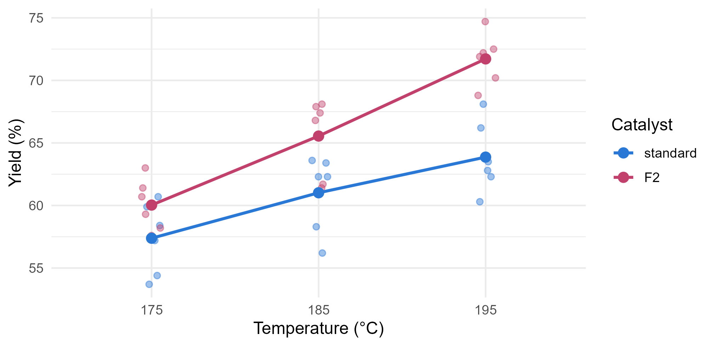

Module 2 · Lesson 14 of 15 Week 44 of 160 About 5–7 hours
Multifactor ANOVA
Two factors at once, blocks, missing runs and covariates
Analyze a two-factor factorial experiment run in blocks: estimate main effects and interactions, read interaction plots, see how blocking removes nuisance variation, handle unbalanced data with Type I, II and III sums of squares, and adjust for a measured covariate with ANCOVA.
The screening experiment found a winner: F2 beat the standard catalyst by about 6 points at 185 °C. The obvious next question for a process engineer: does that hold at other temperatures? Lesson 7 showed that catalysts can respond to heat differently. So the team ran a follow-up experiment with two factors at once, the catalyst and the temperature, and it ran into a classic complication along the way: the feed came from three different lots. This lesson analyzes it.
Two factors, three lots, thirty-six runs. A real experiment, with a real twist: without the right analysis, the most important finding stays hidden. Let’s find it!
In this lesson you’ll:
- see why varying two factors together beats varying one at a time
- estimate main effects and interactions, and draw an interaction plot
- run a two-way ANOVA
- see how blocking removes nuisance variation, and can reveal an effect that was hiding
- read an interaction through its simple effects
- handle unbalanced data, and choose between Type I, II and III sums of squares
- adjust for a measured covariate with ANCOVA
The follow-up experiment
The design crosses two factors: the catalyst at two levels (standard and F2) and the temperature at three (175, 185 and 195 °C). That gives 2 \times 3 = 6 treatment combinations, and the experiment ran every one of them: a full factorial design.
The feed came from three lots, L1 to L3, and the team knew that lots can differ. So each lot was used for a complete set of the six combinations, twice, in a random order within the lot. That’s 3 \times 6 \times 2 = 36 runs, and the lots are blocks: groups of runs that are alike, within which every treatment appears.
factorial <- read_csv("data/factorial.csv", show_col_types = FALSE) |>
mutate(catalyst = factor(catalyst, levels = c("standard", "F2")),
temp = factor(temp_C), lot = factor(lot))
head(factorial)
#> # A tibble: 6 × 7
#> run lot catalyst temp_C feed_water_ppm yield_pct temp
#> <dbl> <fct> <fct> <dbl> <dbl> <dbl> <fct>
#> 1 1 L1 standard 195 200 66.2 195
#> 2 2 L1 F2 185 211 67.9 185
#> 3 3 L1 F2 185 213 67.4 185
#> 4 4 L1 standard 175 209 58.4 175
#> 5 5 L1 F2 175 212 59.3 175
#> 6 6 L1 F2 195 208 72.5 195The temperature goes into the model as a factor, temp, rather than a number. With only three levels, a factor makes no assumption about the shape of the temperature effect: it gets one mean for each level.
Why not vary one factor at a time, the way many engineers are taught? Compare the catalysts at 185 °C, then try the temperatures with the better catalyst? That one-factor-at-a-time approach has two problems. It’s wasteful: in a factorial, every run tells you about both factors, so each comparison uses all 36 runs. And it’s blind to interactions: if F2’s advantage depends on the temperature, you can’t find out by testing the catalysts at only one temperature.
Main effects and interactions
Start with the mean yield of each of the six combinations, the cell means:
factorial |>
group_by(catalyst, temp) |>
summarise(mean_yield = mean(yield_pct), .groups = "drop") |>
tidyr::pivot_wider(names_from = temp, values_from = mean_yield)
#> # A tibble: 2 × 4
#> catalyst `175` `185` `195`
#> <fct> <dbl> <dbl> <dbl>
#> 1 standard 57.4 61.0 63.9
#> 2 F2 60.0 65.6 71.7An interaction plot draws them, with one line per catalyst:
cell_means <- factorial |> group_by(catalyst, temp) |> summarise(yield_pct = mean(yield_pct), .groups = "drop")
ggplot(factorial, aes(x = temp, y = yield_pct, color = catalyst, group = catalyst)) +
geom_point(position = position_jitter(width = 0.06, height = 0, seed = 1), alpha = 0.45, size = 1.8) +
geom_line(data = cell_means, linewidth = 1) +
geom_point(data = cell_means, size = 3) +
scale_color_manual(values = c(standard = "#2a78d6", F2 = "#C2416C")) +
labs(x = "Temperature (°C)", y = "Yield (%)", color = "Catalyst") +
theme_minimal(base_size = 12)
The two factors each have a main effect: averaged over the temperatures, F2 beats the standard (65.8% against 60.8%), and averaged over the catalysts, hotter is better. But the lines aren’t parallel. F2’s advantage grows with the temperature: 2.7 points at 175 °C, 4.5 at 185 °C and 7.9 at 195 °C. That’s an interaction: the effect of one factor depends on the level of the other. In an interaction plot, parallel lines mean no interaction, and lines that diverge, converge or cross mean an interaction.
The model behind a two-way ANOVA writes each run’s yield as
y_{ijk} = \mu + \alpha_i + \beta_j + (\alpha\beta)_{ij} + \varepsilon_{ijk},
where \alpha_i is catalyst i’s main effect, \beta_j temperature j’s, and (\alpha\beta)_{ij} the interaction: whatever’s special about that particular combination. It’s Lesson 7’s dummy variables and interaction columns again, with both predictors categorical.
Your turn. What’s the mean yield of F2 at 195 °C? Compute all six cell means.
Group by both factors: catalyst and temp.
factorial |>
group_by(catalyst, temp) |>
summarise(mean_yield = mean(yield_pct), .groups = "drop")71.7% for F2 at 195 °C, the best of the six combinations, against 63.9% for the standard catalyst at the same temperature.
The two-way ANOVA
aov() fits the model, and catalyst * temp means both main effects and their interaction, as in Lesson 7:
summary(aov(yield_pct ~ catalyst * temp, data = factorial))
#> Df Sum Sq Mean Sq F value Pr(>F)
#> catalyst 1 226.0 226.00 31.174 4.49e-06 ***
#> temp 2 495.1 247.53 34.144 1.86e-08 ***
#> catalyst:temp 2 41.6 20.79 2.868 0.0725 .
#> Residuals 30 217.5 7.25
#> ---
#> Signif. codes: 0 '***' 0.001 '**' 0.01 '*' 0.05 '.' 0.1 ' ' 1Each factor gets its own F-test, and so does the interaction. Both main effects are clear. The interaction, the most interesting part for the plant, has F = 2.9 and p = 0.072: suggestive, but not convincing at the usual 5% level. Should the engineers conclude that F2’s advantage is the same at every temperature?
Not yet. Look at the residual mean square, 7.2, so the run-to-run standard deviation is \sqrt{7.2} = 2.7 points. In the screening experiment, with a single feed lot, it was 2.3. Something extra is adding noise.
Your turn. Fit the two-way ANOVA, and pull out the interaction’s p-value.
The second factor is temp.
fit_2way <- aov(yield_pct ~ catalyst * temp, data = factorial)
summary(fit_2way)[[1]]["catalyst:temp", "Pr(>F)"]p = 0.072. (The [[1]] is needed because summary() of an aov returns a list of tables, one per error stratum. Here there’s only one.)
Blocking
The something extra is the feed lots. Their mean yields differ by up to 5 points: 64.3% for L1, 60.3% for L2 and 65.2% for L3. In the two-way ANOVA, those lot-to-lot differences are part of the residuals, so they inflate the noise against which every effect is judged.
Because each lot contains every treatment combination equally often, the lot differences can be taken out by adding the lot to the model as a block:
summary(aov(yield_pct ~ lot + catalyst * temp, data = factorial))
#> Df Sum Sq Mean Sq F value Pr(>F)
#> lot 2 167.4 83.72 46.83 1.17e-09 ***
#> catalyst 1 226.0 226.00 126.43 6.81e-12 ***
#> temp 2 495.1 247.53 138.47 3.03e-15 ***
#> catalyst:temp 2 41.6 20.79 11.63 0.00021 ***
#> Residuals 28 50.1 1.79
#> ---
#> Signif. codes: 0 '***' 0.001 '**' 0.01 '*' 0.05 '.' 0.1 ' ' 1The lots soak up 167 units of the residual sum of squares, and the residual mean square drops from 7.2 to 1.8, so the run-to-run noise halves, from 2.7 to 1.3 points. Every F statistic grows, and the interaction is now unmistakable: F = 11.6, p = 0.0002. The catalyst and temperature effects didn’t change at all (look at their sums of squares, 226 and 495 in both tables), because the design is balanced: each lot saw every combination equally often, so the lots are uncorrelated with the treatments. Only the noise changed.
This is a randomized complete block design: complete because every block gets every treatment, and randomized because the order is random within each block. The motto of experimental design sums it up: block what you can, randomize what you can’t. You can’t block on things you don’t know about, so randomization protects you against those, as in Lesson 13. But when you know a nuisance factor will matter, like the feed lot, the day, the reactor or the analyst, building it into the design as a block removes its noise completely.
The lot is a nuisance, not a question, so nobody needs its F-test. It’s in the model to clean up the residuals.
Your turn. Fit the blocked model, and find the interaction’s p-value and the residual mean square.
Put the block, lot, first.
fit_block <- aov(yield_pct ~ lot + catalyst * temp, data = factorial)
tab <- summary(fit_block)[[1]]
c(p_interaction = tab["catalyst:temp", "Pr(>F)"], residual_ms = tab["Residuals", "Mean Sq"])p = 0.0002 and a residual mean square of 1.79. The interaction was there all along. The lots’ noise was hiding it.
Reading the interaction
When the interaction is real, the main effects don’t tell the whole story: “F2 is 5 points better” is an average over temperatures that hides how the advantage changes. Report the simple effects instead: the effect of one factor at each level of the other. Here, F2’s advantage at each temperature is the difference of two cell means, each the average of 6 runs, so its standard error is \sqrt{\text{MSE}\,(1/6 + 1/6)} = 0.77 points, using the blocked model’s MSE.
| Temperature | F2’s advantage | 95% interval |
|---|---|---|
| 175 °C | 2.7 points | 1.1 to 4.2 |
| 185 °C | 4.5 points | 3.0 to 6.1 |
| 195 °C | 7.9 points | 6.3 to 9.4 |
F2 is better at every temperature, and much better when hot. For the plant, the conclusion is concrete: switch to F2, and run it hot, since that’s where it shines. (Before going above 195 °C, though, remember Lesson 9’s warning about extrapolating curves, and check the purity, which falls with temperature.)
Your turn. Compute F2’s advantage over the standard at each temperature.
Subtract the standard catalyst’s row, "standard".
m <- tapply(factorial$yield_pct, list(factorial$catalyst, factorial$temp), mean)
m["F2", ] - m["standard", ]2.65, 4.53 and 7.85 points at 175, 185 and 195 °C.
Unbalanced data
Real experiments lose runs. Suppose four samples had been lost (runs 3, 11, 20 and 28), leaving the cells with 4 to 6 runs each instead of 6. The design is now unbalanced, and the factors are no longer uncorrelated with each other. That brings back Lesson 6’s problem: sequential (Type I) sums of squares depend on the order of the terms.
unbalanced <- filter(factorial, !run %in% c(3, 11, 20, 28))
anova(lm(yield_pct ~ lot + catalyst * temp, data = unbalanced))
#> Analysis of Variance Table
#>
#> Response: yield_pct
#> Df Sum Sq Mean Sq F value Pr(>F)
#> lot 2 81.42 40.709 21.831 3.966e-06 ***
#> catalyst 1 127.78 127.776 68.523 1.716e-08 ***
#> temp 2 426.32 213.160 114.312 5.406e-13 ***
#> catalyst:temp 2 44.51 22.254 11.934 0.0002523 ***
#> Residuals 24 44.75 1.865
#> ---
#> Signif. codes: 0 '***' 0.001 '**' 0.01 '*' 0.05 '.' 0.1 ' ' 1
anova(lm(yield_pct ~ lot + temp * catalyst, data = unbalanced))
#> Analysis of Variance Table
#>
#> Response: yield_pct
#> Df Sum Sq Mean Sq F value Pr(>F)
#> lot 2 81.42 40.709 21.831 3.966e-06 ***
#> temp 2 359.76 179.878 96.463 3.363e-12 ***
#> catalyst 1 194.34 194.341 104.219 3.278e-10 ***
#> temp:catalyst 2 44.51 22.254 11.934 0.0002523 ***
#> Residuals 24 44.75 1.865
#> ---
#> Signif. codes: 0 '***' 0.001 '**' 0.01 '*' 0.05 '.' 0.1 ' ' 1The catalyst’s sum of squares is 128 when it comes before the temperature, and 194 after it. Same data, same model, different answer. Three types of sums of squares deal with this differently:
- Type I (sequential): each term after the ones listed before it. Order-dependent. Use only when the order means something.
- Type II: each main effect after the other main effects, but not after its own interactions. That’s the natural test of a main effect when there’s no interaction.
car::Anova(fit, type = 2). - Type III: each term after all the others, interactions included. It needs sum-to-zero contrasts (Lesson 7) to make sense, and it tests main effects averaged equally over the levels of the other factor.
car::Anova(fit, type = 3), after settingcontrasts = list(catalyst = "contr.sum", temp = "contr.sum").
All three give the same test for the interaction, the last term. And that’s the practical advice: test the interaction first. If it’s real, as here, the main-effect tests aren’t very meaningful whatever their type, and the simple effects or cell means are what to report. If it isn’t, Type II tests of the main effects are the usual choice. Statisticians argue a lot about Type II against Type III. Knowing that the argument exists, and what each type tests, puts you ahead of most software users.
Your turn. Find the catalyst’s sequential sum of squares in both orders.
In the second model, the temperature comes before the catalyst: temp * catalyst.
unbalanced <- filter(factorial, !run %in% c(3, 11, 20, 28))
first <- anova(lm(yield_pct ~ lot + catalyst * temp, data = unbalanced))
second <- anova(lm(yield_pct ~ lot + temp * catalyst, data = unbalanced))
c(catalyst_first = first["catalyst", "Sum Sq"], catalyst_after_temp = second["catalyst", "Sum Sq"])128 and 194. Three of the four lost runs were F2 runs, two of them at 195 °C, so in the unbalanced data the catalyst is tangled up with the temperature, and the credit depends on who goes first. In the full, balanced data, both orders give 226.
ANCOVA: adjusting for a covariate
Why did the lots differ? The lab measured the water content of the feed for every run, and the lots were very different: about 207 ppm for L1, 265 for L2 and 180 for L3. Water lowers the yield (Lesson 5). So instead of a block for each lot, you could adjust for the measured water directly. A model with categorical factors plus a numerical covariate is called an analysis of covariance, or ANCOVA:
fit_ancova <- lm(yield_pct ~ feed_water_ppm + catalyst * temp, data = factorial)
summary(fit_ancova)$coefficients
#> Estimate Std. Error t value Pr(>|t|)
#> (Intercept) 70.0130339 1.534579597 45.623592 1.482362e-28
#> feed_water_ppm -0.0583358 0.006563582 -8.887799 8.921316e-10
#> catalystF2 2.5041605 0.819492571 3.055745 4.782757e-03
#> temp185 3.5749975 0.819354564 4.363187 1.480943e-04
#> temp195 6.6583407 0.819564852 8.124239 5.857099e-09
#> catalystF2:temp185 2.3889103 1.160100631 2.059227 4.855169e-02
#> catalystF2:temp195 5.1027737 1.158756795 4.403662 1.324658e-04
car::Anova(fit_ancova, type = 2)
#> Anova Table (Type II tests)
#>
#> Response: yield_pct
#> Sum Sq Df F value Pr(>F)
#> feed_water_ppm 159.08 1 78.9930 8.921e-10 ***
#> catalyst 225.12 1 111.7827 1.838e-11 ***
#> temp 508.89 2 126.3455 4.820e-15 ***
#> catalyst:temp 39.10 2 9.7088 0.0005919 ***
#> Residuals 58.40 29
#> ---
#> Signif. codes: 0 '***' 0.001 '**' 0.01 '*' 0.05 '.' 0.1 ' ' 1Each ppm of water costs 0.058 points of yield, very close to the process study’s estimate, and the interaction is clear (p = 0.0006). The residual standard deviation is 1.42 points, almost as small as with the lot blocks (1.34). The water explains nearly all of the lot-to-lot variation.
ANCOVA is regression with both factors and numerical predictors, so everything from Lessons 5 to 12 applies. Two things to know:
- Its assumption is that the covariate has the same slope in every group (no covariate × treatment interaction). Check it by adding
feed_water_ppm:catalystand testing it. - It gives adjusted means: the predicted mean of each treatment at the same value of the covariate, usually its average. When the covariate differs between groups, comparing adjusted means is fairer than comparing raw means.
Blocking and ANCOVA are two ways of removing the same nuisance. Blocking needs nothing measured, and removes everything that differs between blocks. ANCOVA needs a measurement, and removes only what that measurement explains, but it works even when the covariate varies within blocks, and it can be used after the fact.
Your turn. Fit the ANCOVA, and find the water coefficient.
The covariate is feed_water_ppm.
fit_ancova <- lm(yield_pct ~ feed_water_ppm + catalyst * temp, data = factorial)
coef(fit_ancova)["feed_water_ppm"]−0.058 points per ppm. L2’s feed, about 58 ppm wetter than L1’s, costs about 3.4 points: most of the 4-point gap between their mean yields.
Challenge round
Challenge 1 · Is the lot just its water? If the water explains the lot differences completely, adding the water to the blocked model should add nothing. Test it with a partial F-test.
Add feed_water_ppm to the blocked model.
blocked <- lm(yield_pct ~ lot + catalyst * temp, data = factorial)
both <- lm(yield_pct ~ lot + feed_water_ppm + catalyst * temp, data = factorial)
anova(blocked, both)p = 0.92: once the lots are in the model, the water adds nothing. The run-to-run variation in water within a lot is small, so all the water’s information is already in the lot differences. Blocks and covariate tell the same story, which is reassuring: it means we know why the lots differed.
Challenge 2 · Adjusted means. Use the ANCOVA to predict the mean yield of each of the six combinations at the average water content of all 36 runs. These are the adjusted means. Which combination is best?
The average water content is mean(factorial$feed_water_ppm).
fit_ancova <- lm(yield_pct ~ feed_water_ppm + catalyst * temp, data = factorial)
grid <- expand.grid(catalyst = levels(factorial$catalyst), temp = levels(factorial$temp),
feed_water_ppm = mean(factorial$feed_water_ppm))
grid$adjusted_mean <- predict(fit_ancova, newdata = grid)
gridAt the average water content of 217 ppm, F2 at 195 °C is best, at 71.6%, and the standard catalyst at 175 °C is worst, at 57.3%. Here they’re almost identical to the raw cell means, because the design is balanced over the lots, so every combination saw the same mix of water. The adjustment matters most when the covariate differs between treatments.
Quick quiz
1. What’s the main advantage of a factorial design over varying one factor at a time?
One-factor-at-a-time experiments use their runs less efficiently, and they can’t see whether one factor’s effect depends on another.
2. In an interaction plot, the lines for the two catalysts are parallel. What does that mean?
Parallel lines mean a constant gap between the catalysts. Non-parallel lines mean an interaction.
3. Adding the lots as blocks made the interaction significant. Why?
The effects’ sums of squares were the same in both analyses. Only the noise they were compared with shrank, from a mean square of 7.2 to 1.8.
4. “Block what you can, randomize what you can’t.” What does it mean?
Blocking removes the noise from nuisance factors you know about. Randomization stops the ones you don’t know about from lining up with the treatments.
5. In unbalanced data, which sums of squares depend on the order of the terms in the model?
Type I gives each term credit only for what the terms before it didn’t explain. Types II and III don’t depend on the order.
6. What does ANCOVA assume about the covariate?
The basic ANCOVA fits parallel lines, one per group. If the slopes differ, the covariate interacts with the treatment, and the adjusted differences depend on the covariate’s value.
Wrap-up
You can now design and analyze real multifactor experiments! Here’s what you’ve learned:
- Factorial designs run every combination of the factors’ levels. They’re more efficient than one-factor-at-a-time, and they reveal interactions.
- Main effects and interactions: the two-way model is \mu + \alpha_i + \beta_j + (\alpha\beta)_{ij}.
aov(y ~ A * B)tests each part. Interaction plots show non-parallel lines when the factors interact. - Blocking groups similar runs, like those from the same feed lot, and gives every block every treatment. It removes nuisance variation from the residuals: here it cut the noise in half and revealed the interaction (p = 0.072 became p = 0.0002).
- When there’s an interaction, report the simple effects: F2’s advantage grew from 2.7 points at 175 °C to 7.9 at 195 °C.
- Unbalanced data make Type I sums of squares order-dependent. Test the interaction first, use Type II for main effects without an interaction, and know what Type III tests.
- ANCOVA adds a numerical covariate to a factorial model. Here, the feed water explained the lot differences. It assumes parallel slopes, and it gives adjusted means.
TipPractice in RStudio (optional, about an hour)
Download factorial.csv into your project’s data-raw/ folder, and install the emmeans package if you haven’t yet.
- Simple effects with emmeans. Fit
fit <- lm(yield_pct ~ lot + catalyst * temp, data = factorial), then runemmeans::emmeans(fit, pairwise ~ catalyst | temp)for F2’s advantage at each temperature, with standard errors and tests. Compare them with the table in this lesson. - Temperature as a number. Refit with
temp_Cas a numerical predictor instead of the factor, with and without a squared term. Does a straight line in temperature fit as well as the factor? (Test it: the straight-line model is nested in the factor model.) - Base R’s interaction plot. Try
with(factorial, interaction.plot(temp, catalyst, yield_pct)). - Plan your own. Design a 2 \times 2 \times 2 factorial for three factors you’d like to test in a lab (say, temperature, catalyst and stirring speed), with two replicates. Use
expand.grid()to list the runs andsample()to randomize them. How many runs is it, and which interactions could you estimate?
NoteKey words from this lesson
- Factor and level
- In an experiment, a variable you set (a factor), and the values you set it to (its levels).
- Full factorial design
- An experiment that runs every combination of the factors’ levels.
- Main effect
- The effect of one factor, averaged over the levels of the other factors.
- Interaction
- When the effect of one factor depends on the level of another.
- Interaction plot
- A plot of the cell means against one factor, with a line for each level of another. Non-parallel lines suggest an interaction.
- Block
- A group of similar runs, such as those using the same feed lot, within which the treatments are compared.
- Randomized complete block design
- A design in which every block receives every treatment, in a random order within the block.
- Simple effect
- The effect of one factor at a fixed level of another.
- Type I, II and III sums of squares
- Sequential tests (order-dependent), tests of each main effect after the other main effects, and tests of each term after all the others.
- Analysis of covariance (ANCOVA)
- A model with categorical factors and a numerical covariate, used to compare treatments after adjusting for the covariate.
NoteWant to read more?
- Penn State STAT 502, Lesson 5: Multi-Factor ANOVA and Lesson 7: Randomization Design Part I. Factorial designs and interactions, then completely randomized and randomized complete block designs. Its Lessons 9 and 10 cover ANCOVA.
- NIST/SEMATECH e-Handbook of Statistical Methods, “Process improvement”. The whole chapter on designed experiments for engineers, from full factorials to response surfaces.
- Douglas Montgomery, Design and Analysis of Experiments (Wiley), chapters 4 and 5. Blocking and factorial designs, with many chemical-engineering examples.